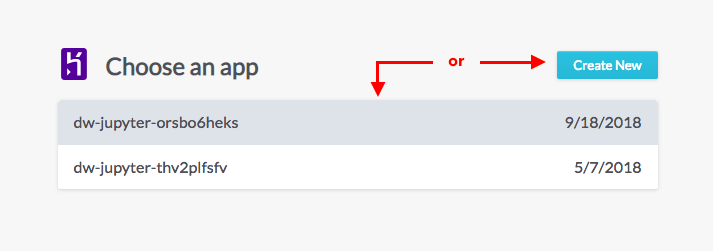

- Choose Heroku from the host options in the Choose a host panel.
- Choose a previously created app from your list, or click Create New to create a new iteration of Jupyter.

- If creating a new app, you will need to create a password and enter any required Python packages.